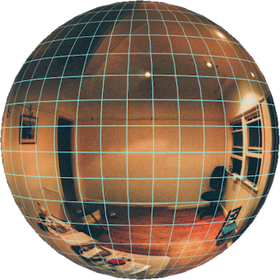

INSIDE
It has been a year since we moved out of my home of 16 years. Left behind in the house are the items that we own but never needed enough to keep. The items are strewn about as if we left in a hurry. Which in a way we did, we were expecting the house to be knocked down and a new one built in its place, instead this house has come to represent a past life, when everything in the world was bigger and mysterious.